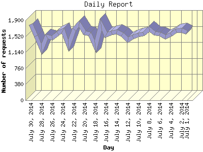

The Daily Report identifies the activity for each day within the reporting period. Remember that one page hit can result in several server requests as the images for each page are loaded.

| Day | Number of requests | Number of page requests | |
|---|---|---|---|
| 1. | July 1, 2014 | 1,614 | 1,489 |
| 2. | July 2, 2014 | 1,663 | 1,457 |
| 3. | July 3, 2014 | 1,651 | 1,447 |
| 4. | July 4, 2014 | 1,563 | 1,488 |
| 5. | July 5, 2014 | 1,498 | 1,442 |
| 6. | July 6, 2014 | 1,571 | 1,453 |
| 7. | July 7, 2014 | 1,592 | 1,468 |
| 8. | July 8, 2014 | 1,696 | 1,502 |
| 9. | July 9, 2014 | 1,576 | 1,428 |
| 10. | July 10, 2014 | 1,546 | 1,372 |
| 11. | July 11, 2014 | 1,499 | 1,353 |
| 12. | July 12, 2014 | 1,428 | 1,356 |
| 13. | July 13, 2014 | 1,565 | 1,462 |
| 14. | July 14, 2014 | 1,628 | 1,480 |
| 15. | July 15, 2014 | 1,594 | 1,471 |
| 16. | July 16, 2014 | 1,557 | 1,481 |
| 17. | July 17, 2014 | 1,805 | 1,522 |
| 18. | July 18, 2014 | 1,279 | 1,158 |
| 19. | July 19, 2014 | 1,579 | 1,501 |
| 20. | July 20, 2014 | 1,597 | 1,550 |
| 21. | July 21, 2014 | 1,817 | 1,615 |
| 22. | July 22, 2014 | 1,681 | 1,514 |
| 23. | July 23, 2014 | 1,303 | 1,162 |
| 24. | July 24, 2014 | 1,655 | 1,494 |
| 25. | July 25, 2014 | 1,586 | 1,470 |
| 26. | July 26, 2014 | 1,485 | 1,452 |
| 27. | July 27, 2014 | 1,517 | 1,465 |
| 28. | July 28, 2014 | 1,215 | 1,127 |
| 29. | July 29, 2014 | 1,526 | 1,445 |
| 30. | July 30, 2014 | 1,798 | 1,577 |
Most active day July 21, 2014 : 1,615 pages sent. 1,817 requests handled.
Daily average: 1,440 pages sent. 1,569 requests handled.
This report was generated on July 31, 2014 08:57.
Report time frame July 1, 2014 00:00 to July 30, 2014 23:59.
| Web statistics report produced by: analog 6.0 / Report Magic 2.21 |